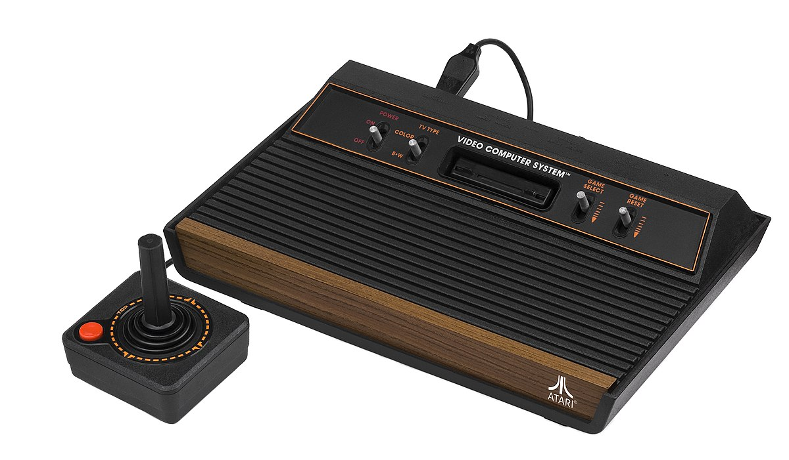

Historia del Gaming
La historia de los videojuegos es una fascinante evolución tecnológica y cultural que ha transformado la forma en que las personas se entretienen y se conectan en todo el mundo.
-
Década de 1970:
Nacen los primeros videojuegos comerciales como Pong y Space Invaders, marcando el inicio de la industria y la popularidad de los salones arcade.

-
Década de 1980:
Surgen consolas como Atari 2600 y Nintendo Entertainment System (NES), llevando los videojuegos a los hogares. Aparecen franquicias legendarias como Mario, Zelda y Tetris.
-
Década de 1990:
La llegada de los gráficos en 16 y 32 bits, el auge de Sega y PlayStation, y la popularización de los juegos en 3D revolucionan la experiencia de juego.

-
Siglo XXI:
El gaming se vuelve global y social con internet, juegos en línea, eSports y dispositivos móviles. Aparecen consolas modernas como PlayStation, Xbox y Nintendo Switch.